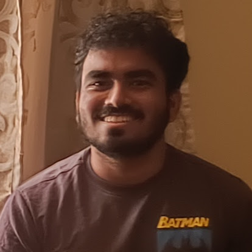

|
Suresh Kondepudi I'm a M.Sc. Robotics student at Arizona State University, Tempe. I am Interested in Robot Control, Planning and Estimation. I am currently pursuing a Masters Thesis with Dr. Nakul Gopalan in the Logos Lab. I've prior worked as a Robotics Engineer for Eternal Robotics, where my efforts were on programming systems on STM32 and TI-Embedded platforms for guided ground robots. I also worked at Mahindra & Mahindra as a Graduate Engineer Trainee where I contributed to their automation systems on their Automobile manufacturing line. During my Bachelor's at in Electrical & Electronics Engineering at Mahindra École Centrale, I worked on Kalman Filter based Estimation for Battery Management Systems under Dr. Gopinath G R. |
 |
{kind=link}
Projects |

|
AUVMEC: A Semi-Autonomous Underwater Robot
Co-founder and Electrical-Software team lead for AUVMEC-2020. Designed and developed the electronics and control subsystem for the AUV. Implemented high-level control algorithms and safety systems with sensors for the semi-autonomous vehicle. |

|
IMU Orientation Visualization using OpenGL
Wrote a simple tool that uses OpenGL and a serial interface with a RP-2040 mcu with an imu to visualize the current orientation of the imu-board/device. |

|
A Self Balancing Gough-Stewart Platform
A 6-axis Parallel Gough-Stewart Platform robot that can self-orient itself to counter gravity. |
|
Inspired by source code. |